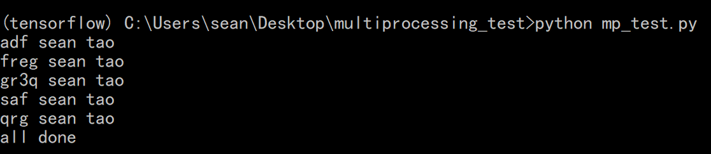

关于 python 多线程模块 threading 以及 多进程模块 multiprocessing 的使用。
注意：本文代码均在 python 3.5 中实现，其他版本未亲测。
threading 模块
关于 python 的多线程模块 threading 的使用方式。
1 | def fun1(): |
输出为：
thread 1 start 1526973092.5235336
thread 1 end 1526973097.535105
thread 2 start 1526973097.5354195
thread 3 start主线程中间 1526973097.5474474
1526973097.5414264
thread 2 end 1526973107.548385
thread 3 end 1526973112.5574799
主线程结束 1526973112.5574799
可以看出，thread 1 执行完毕了后，同时开始执行（几乎） thread2, thread3 和 print 语句，（print 语句是主线程中的），这是因为，在 thread1, thread2 调用之前，t1.join() 已经阻塞了别的线程。由于 thread3 用时较长，因此 thread2 先结束，然后 thread3 结束。在 thread3 结束后，主线程才执行最后的 print 语句。
由于 python GIL (Global Interpreter Lock) 的限制，python 的多线程并没有达到真正的多线程的效果，不能充分地利用 CPU。但是多进程可以充分地利用 CPU，因此使用 multiprocessing 模块来使用多进程。
multiprocessing 模块
此处采用线程池的方式进行多线程操作。
1 | from multiprocessing import Pool |
输出为:

以上代码为针对多参数的函数，
1 | pool.starmap(func=fun, iterable=product(arg_1, arg_2, arg_3)) |
是通过 itertools 的 product 函数，将三个参数进行笛卡儿积。例如：
1 | product(['a', 'b', 'c'], ['1']) # 结果为 ('a','1')，('b', '1'), ('c', '1') |
关于 product 函数以及 itertools 包的使用，可点击这里了解更多。
值得注意的是，product 函数的输入必须是 iterable 的。这样，才可以进行 笛卡儿积。
此外，多参数进程池还有别的方法，但未亲测。
pool.map - multiple arguments